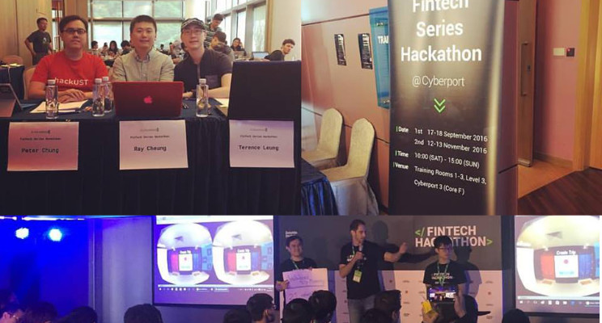
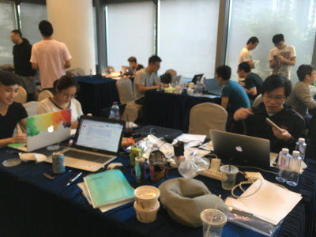
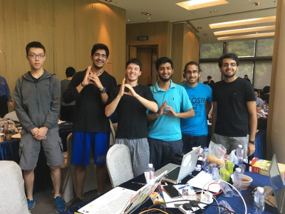
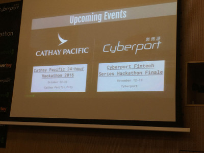
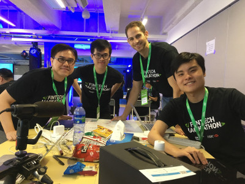
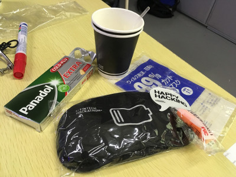
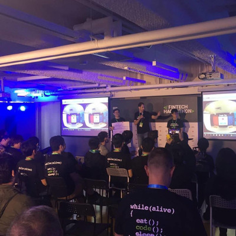

I have long been thinking of writing monthly articles about Hackathon in Hong Kong. First, I can foresee that I can involve at least one Hackathon based in Hong Kong in the next few months. Second, if there is no such Hackathon being organized, I should have enough experience to retrospect some past Hackathons. Last but not least, I never spot any similar article before in Hong Kong. I helped organize Hackathon since 2014 and I really want to spread Hackathon culture locally.
No Hackathon is perfect. I will mainly focus on reporting the good things I perceived and the lessons I learned during the Hackathon competitions. In my opinion, every Hackathon has its own unique characteristics. We should not use a simple metric to judge whether a Hackathon is good or not.
I joined 2 FinTech Hackathons in 4 consecutive days in Sep 2016.
Organizers: Cyberport and Bitwisehacks
My roles were a judge and an event promoter (mainly towards HKUST students). I didn’t join the first day, but arrived early (before 9am) on the second day. I was pretty impressed that at least 5 (out of 12 teams) were still working in the morning.

I chatted with the teams and found a good mix of first-time hackers and experienced hackers there. In particular, I saw many teams formed by HKUST students and/or alumni.

The judging panel (including myself) should provide valuable feedback to the teams. For example, a first-time hacker team only presented their ideas but didn’t show any prototype. In my opinion, no marks should be given no matter how well the team presented. A team should have a live demo!
Bitwisehacks is a pretty cool Hackathon organizer. They implemented their own Hackathon platform to host the competitions. The system provides several unique features comparing with standard hosting platforms (e.g. Devpost and Hackathon.io).
A fast track of Cyberport Creative Micro Fund was given to the champion. Minor prizes were given to other teams.

Organzier: Finnovasia
My role was a participant. I have a very good impression for the organising committee. As the competition was organized on Mon/Tue, I was required to apply for annual leave early. The OC was very responsive and the place could almost be guaranteed.
I joined this Hackathon alone. I arrived early and tried to find teams. I regarded myself as a developer. The team forming process was very smooth. A team of 2 developers, 1 entrepreneur, and 1 graphics designer was formed.

This Hackathon was pretty well funded. More than 10 organizers were available at any moment during the daytime. Unlimited snacks and drinks were provided. In particular, I loved the coffee machine a lot and I drunk at least 5 cups in 2 days!
I was sick at night, but I tried my best to make some contributions to the team. I brought Panadol tablets from a convenience store and had many cups of hot water. Our team worked until 11:30pm. Finally, I was recovered in Day 2 morning and arrived early (at around 9am)

Our team did have some debates at the beginning. We knew that Virtual Reality (VR) might not match with the FinTech theme, it should be safer to develop a web/mobile prototype. Finally, we agreed to try the VR idea. We tried our best to make a functional prototype with VR payment. Even I was sick, I learned a lot of VR programming skills in these 2 days. The plan didn’t go well, but our presentation was well received among audience.

The prizes were very attractive. The winning team got HK$50,000 cash prize! The total amount of prize was more than HK$100K!